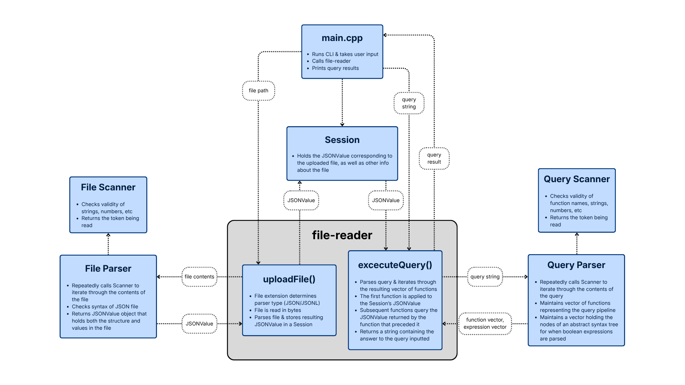

Jul 27
Kickoff & role assignment
Chose Option 2 (JSON analysis), wrote Sprint 1's PLAN.md, split into parser/data-model, reader/lookup, and CLI/testing roles.
A low-memory command-line tool for parsing and querying JSON & JSONL files, with a small purpose-built query language — Javier Herrera Jr, Jules, Ryan
Streamline reads a .json or .jsonl file into memory once,
then runs as many queries against it as you want through a small pipeline language —
GET, FILTER, SORT, LIMIT,
GROUPBY, and AVERAGE, chained together with |.
Requires CMake 3.16+ and a C++17 compiler. One build produces everything:
cmake -B build
cmake --build build
Three binaries come out of build/: streamline (the CLI),
tests (the correctness suite — see Testing), and
benchmark (the performance harness — see
Benchmarking). Installing
Readline
(brew install readline on macOS) is optional — streamline
picks it up automatically for arrow-key history and still builds fine without it.
Run with no arguments for the interactive menu. Upload a file once, then query it as many times as you want without re-reading it from disk:
$ ./build/streamline
[MENU] u upload s search m menu q quit
> u
Enter path to your file: json/students.json
File students.json uploaded successfully. (85032 records)
[students.json] > s
Enter your search query: GROUPBY(GET("major")) | AVERAGE(GET("gpa"))
{ "Computer Science": 2.998, "Statistics": 3.003, ... }
$ ./build/streamline json/students.json 'FILTER(GET("gpa") > 3.9) | LIMIT(3)'
GET takes field names and array indexes in the order they should be
followed; every other stage chains onto whatever came before it with |.
Jump straight to any operation — every example below is a real query run against the actual binary, not hand-written.
Retrieve the value at a given path. Multiple arguments walk into nested objects/arrays.
GET("student","name"){"student":{"name":"Ryan","scores":[90,85]}}"Ryan"Keep only the records matching a boolean expression — comparisons combine with AND / OR, not just one condition.
FILTER(GET("a") > 1)[{"a": 1, "b": 2}, {"a": 2, "b": 2}][{"a": 2, "b": 2}]FILTER(GET("major") == "CS" AND GET("gpa") > 3.5)Order an array of records by a field, ascending or descending.
SORT(GET("a"), ASC)[{"a": 1, "b": 2}, {"a": 0, "b": 3}][{"a": 0, "b": 3}, {"a": 1, "b": 2}]Return only the first N records.
LIMIT(1)[{"a": 1, "b": 2}, {"a": 0, "b": 3}][{"a": 1, "b": 2}]Bucket records by the value of a field.
GROUPBY(GET("a"))[{"a": 1, "b": 2}, {"a": 0, "b": 3}, {"a": 1, "b": 5}]{"1": [{"a": 1, "b": 2}, {"a": 1, "b": 5}], "0": [{"a": 0, "b": 3}]}Compute the mean of a field. Works standalone (one number) or right after GROUPBY (one number per group, same code path).
GROUPBY(GET("city")) | AVERAGE(GET("price"))[{"id":1,"city":"Riverside","price":450000}, {"id":2,"city":"Riverside","price":480000}, {"id":3,"city":"Los Angeles","price":800000}, {"id":4,"city":"Riverside","price":460000}]{"Riverside": 463333.33, "Los Angeles": 800000}
AVERAGE can also appear inside a FILTER condition
instead of running as its own pipeline stage. There it averages the numbers in
whatever array is currently being tested per record, so it filters records (or
groups) against their own average rather than a single global one.
FILTER(AVERAGE() > 4)[[1, 3, 5], [2, 4, 6], [3, 6, 12, 18]][[3, 6, 12, 18]]FILTER(AVERAGE(GET("price")) > 50) against an array of record-arrays — averages price within each inner array before comparing.| threads one stage's output into the next. There's no fixed cap on how many stages can chain — tested up to 50 in a row with no issue.
FILTER(GET("gpa") > 3.9) | SORT(GET("gpa"), DESC) | LIMIT(3)
Streamline is built around two independent parsers. One is the
JSON/JSONL parser — a FileScanner tokenizes raw text and a
FileParser builds a tree of JSONValue nodes (each a
tagged std::variant). The other is a completely separate
query-language parser — its own QueryScanner and
QueryParser — that turns a query string like
FILTER(GET("gpa") > 3.5) | LIMIT(5) into an expression tree, which an
execution engine then walks, one pipeline stage at a time, against the
uploaded document.
file-scanner.h / file-scanner.cppFileScanner::scan()Token at a time; keywords resolved through a lookup tablefile-parser.h / file-parser.cppvalue.h — JSONValue (variant)FileParser::parse()session.huploadFile() parses the whole document once
The whole uploaded document becomes a single JSONValue stored on
Session::file. Every query then runs against that one value — see
Limitations for the cost that currently comes with that.
query-scanner.h / .cpp, query-parser.h / .cppFILTER / SORT / GROUPBY / … via a keyword tableAND / ORExpressionNode — a variant, indexed by NodeIdQueryFunction — one per pipeline stageexcecuteQuery()query-engine.cppQueryFunction in orderFILTER / SORT / LIMIT / GROUPBY / AVERAGE
GROUPBY(GET("city")) | AVERAGE(GET("price")) is one query string but
two QueryFunctions. excecuteQuery() starts with
current = session.file and, for each stage, replaces current
with that stage's result — GROUPBY turns an array into an object keyed
by group, and the following AVERAGE sees that object and averages
within each group instead of across the whole array. Every stage is checked
against the shape it actually got (array vs. object) and fails with a readable error
rather than misreading the wrong type.

JSONValue is a single concrete class wrapping a tagged
std::variant<ArrayValue, bool, nullptr_t, double, ObjectValue, string>.
getType() derives the
ValueType straight from variant::index() (the enum's
declaration order is kept in sync with the variant's alternative order), and every
caller downstream — get(), formatValue() — reads the
payload with std::get<T>(value.getValue()) once the type is known.
The alternative worth naming here is polymorphism: an abstract JSONValue
base with a virtual getType(), one concrete leaf class per
ValueType (JSONNull, JSONBoolean,
JSONNumber, JSONString, JSONArray,
JSONObject), and every node heap-allocated behind a
JSONValuePtr (unique_ptr<JSONValue>) — arrays/objects
would hold a vector of pointers-to-children rather than the children
themselves. That's not what this codebase does, and the table below is why:
| Polymorphism | Variant (used here) | |
|---|---|---|
| Per-node cost | 1 heap allocation + vtable pointer per node | No allocation, no vtable — the tag is 1 byte inline |
| Type dispatch | getType() is a virtual call (indirect, through the vtable) |
variant::index() — a direct integer load |
| Reading a value | Downcast (or an already-known concrete type) to reach the field | std::get<T>(value.getValue()), checked against a closed set of alternatives |
| Tree layout | Graph of heap nodes linked by unique_ptr — pointer-chasing to traverse |
JSONValues live directly inside the parent's vector — contiguous, cache-friendly |
| Extensibility | Add a new ValueType by adding a new subclass |
Add a new ValueType by adding a variant alternative (touches every switch / visit, which the compiler flags as non-exhaustive) |
For a JSON tree with thousands of nodes, the polymorphic version does thousands of
individual heap allocations (one make_unique per value) and pays a
vtable-pointer's worth of memory on every single node, including leaves
like a lone true or a short number. Traversing the tree means chasing
pointers across wherever the allocator scattered them, which is unfriendly to the
cache. The variant version allocates once per vector's backing storage
(amortized across all of that container's children) instead of once per value, drops
the vtable pointer entirely, and keeps sibling values next to each other in memory.
Since the whole premise is staying fast and low-memory on large files, that tradeoff
is worth making even though it gives up some OOP ergonomics —
isString() / isArray()-style helpers, for example, don't
exist; every call site does a single switch(getType()) instead.
The honest tradeoff in the other direction: sizeof(JSONValue) is at
least as big as its largest alternative (ObjectValue, a
vector of key/value pairs) plus a small tag, so a node that's "just a
bool" is heavier in isolation than a bare JSONBoolean would be. That
cost is paid once per node either way (inline now vs. on the heap otherwise) — a wash
on a small tree, and a clear win once allocation count and pointer-chasing start to
dominate on a large one.
JSONValue represents data. Queries need their own tree to
represent a program — FILTER(GET("gpa") > 3.5) is a small
expression, and QueryParser builds it the same variant-based way the
data model above works: an ExpressionNode is a tagged
std::variant, and every node lives in one flat vector,
referenced by a NodeId (an index into that vector) rather than by
pointer.
BinaryOperand is what makes FILTER(GET("a") > 0 AND GET("b") == 2)
possible: it doesn't hold its operands directly, it holds two more NodeIds
— so a comparison, an AND, and an OR are all the same struct,
and evaluating one just means recursively evaluating whatever nodes its left
and right point at. AverageOperand is what makes
Filter by Average possible — it can appear as an
operand inside the very same expression tree a comparison does. A separate
QueryFunction variant
(Get / Filter / Sort / Limit / GroupBy / Average)
represents the pipeline stages themselves, each one pointing into this same node
vector for whatever expression it needs (a FILTER's condition, a
SORT's target field, and so on).
Turns raw text into one Token at a time, on demand, rather than tokenizing the whole input up front. Tracks its own line number and knows whether it's scanning a .json or .jsonl buffer, so it can phrase errors accordingly. true/false/null resolve through a static keyword table instead of one character-chain per word.
enum class JSONTokenType : uint8_t {
Boolean, Colon, Comma, End, LBrace, LBracket,
Null, Number, ObjEnd, RBrace, RBracket, String
};
enum class ParserType { JSONL, JSON };
struct Token {
JSONTokenType type;
string_view value; // view into the original buffer, no copy
Token(JSONTokenType t, string_view v);
};
class FileScanner {
public:
FileScanner(string_view json, ParserType type);
int getLineNumber() const;
Token scan(); // advances and returns the next token
};Recursive-descent parser: one parseObject() call per JSON value, recursing for nested objects/arrays. JSONValue is returned by value — a tagged variant, not a heap-owned pointer. The top-level JSON branch now checks that nothing follows a parsed value, so a bare scalar with trailing content is rejected instead of silently accepted.
enum class ValueType : uint8_t { Array, Boolean, Null, Number, Object, String };
using ArrayValue = vector<JSONValue>;
using ObjectValue = vector<pair<string, JSONValue>>;
class JSONValue {
public:
explicit JSONValue(ArrayValue a);
explicit JSONValue(bool b);
explicit JSONValue(nullptr_t n);
explicit JSONValue(double d);
explicit JSONValue(ObjectValue o);
explicit JSONValue(string s);
ValueType getType() const;
const variant<ArrayValue, bool, nullptr_t, double, ObjectValue, string>& getValue() const;
};
class FileParser {
public:
FileParser(string_view json, ParserType type);
JSONValue parse();
JSONValue parseObject();
};Its own recursive-descent grammar, entirely separate from the JSON parser above. Keywords (AND, OR, GET, FILTER, SORT, LIMIT, GROUPBY, AVERAGE, ASC, DESC, true, false) resolve through a static table after the identifier is scanned. parsePipeline() splits on |; each stage's parseFilter() / parseSort() / etc. builds ExpressionNodes as needed and pushes one QueryFunction.
class QueryScanner {
public:
explicit QueryScanner(string_view query);
QueryToken scan();
};
class QueryParser {
public:
explicit QueryParser(string_view query);
void parse();
const vector<ExpressionNode>& getExpressionNodes() const;
const vector<QueryFunction>& getFunctions() const;
};Session holds the uploaded document; excecuteQuery() runs a query string against it and returns the formatted result (or a formatted error) as one string — no exceptions escape past it for a malformed query, they're caught by the caller in main.cpp. Session::initialize() now moves its arguments into place rather than copying them (see Optimizations). evaluateNode() and compareValues() are the two functions that actually walk a parsed FILTER condition against one record — evaluateNode() recurses over an ExpressionNode by NodeId (short-circuiting AND/OR before recursing into the untaken side), bottoming out at compareValues() for a leaf comparison.
struct Session {
JSONValue file = JSONValue(nullptr);
bool isInitialized = false;
string name = "";
int records = 0;
void initialize(JSONValue v, string n); // moves v/n into place
};
void uploadFile(const string& path, Session& session);
string excecuteQuery(Session& session, const string& query);
struct LookupResult {
bool ok;
const JSONValue* value; // valid when ok == true, non-owning
string error; // valid when ok == false
};
LookupResult get(const JSONValue& value, const vector<string_view>& path);
string formatResult(const LookupResult& result);
// used by FILTER's condition and SORT's comparator
JSONValue evaluateNode(NodeId id, const vector<ExpressionNode>& nodes, const JSONValue& record);
bool compareValues(const JSONValue& lhs, QueryTokenType op, const JSONValue& rhs);main.cpp is menu-driven: doUpload() then doSearch() loop over promptLine(), so a file is read once and queried as many times as you want. promptLine() uses GNU Readline for arrow-key history and in-line editing when it's available (STREAMLINE_READLINE, detected by CMakeLists.txt) and falls back to plain getline otherwise. The direct argv form (streamline file.json "query") still works too, for scripting. See Tutorial for a full transcript.
Pseudocode for the three algorithms that do most of the work: parsing a JSON document, parsing a query string, and evaluating a parsed query against the loaded document. Optimizations applied on top of these are covered separately, in Optimizations & Refactoring.
Recursive descent, pulled one token at a time from FileScanner::scan() —
no lookahead beyond the current token. .jsonl repeats the same
parseObject() per line instead of parsing one document for the whole file.
function parse():
if fileType == JSON:
if currentToken == END: return null
value ← parseObject()
if currentToken != END: error "trailing content"
return value
else: # JSONL
records ← []
while currentToken != END:
while currentToken != OBJ_END and currentToken != END:
records.append(parseObject())
advance() # consume the newline/OBJ_END marker
return Array(records)
function parseObject():
switch currentToken.type:
case LBRACE:
pairs ← []
advance()
while currentToken != RBRACE:
key ← currentToken.value # must be STRING
advance(); expect(COLON); advance()
pairs.append((key, parseObject())) # ← recursion
if currentToken == COMMA: advance()
advance()
return Object(pairs)
case LBRACKET:
items ← []
advance()
while currentToken != RBRACKET:
items.append(parseObject()) # ← recursion
if currentToken == COMMA: advance()
advance()
return Array(items)
case STRING: advance(); return String(token.value)
case NUMBER: advance(); return Number(parseFloat(token.value))
case BOOLEAN: advance(); return Boolean(token.value == "true")
case NULL: advance(); return Null
default: error "unexpected token"
Also recursive descent, an entirely separate grammar from the one above. Boolean
expressions inside FILTER(...) use precedence climbing — OR
binds loosest, then AND, then a comparison — so
a == 1 AND b == 2 OR c == 3 groups as (a==1 AND b==2) OR (c==3).
function parsePipeline():
functions ← []
while currentToken != END:
name ← currentToken.value; advance()
functions.append(parseStage(name)) # GET / FILTER / SORT / LIMIT / GROUPBY / AVERAGE
if currentToken == PIPE: advance()
else if currentToken != END: error "expected '|' or end"
return functions
function parseExpression(): return parseOr()
function parseOr():
left ← parseAnd()
while currentToken == OR:
advance(); right ← parseAnd()
left ← BinaryNode(left, OR, right)
return left
function parseAnd():
left ← parseComparison()
while currentToken == AND:
advance(); right ← parseComparison()
left ← BinaryNode(left, AND, right)
return left
function parseComparison():
left ← parseOperand() # literal, GET(...), or AVERAGE(...)
if currentToken in {==, !=, <, <=, >, >=}:
op ← currentToken.type; advance()
right ← parseOperand()
left ← BinaryNode(left, op, right)
return left
excecuteQuery() walks the parsed QueryFunction list in
order, threading one value — current — through every stage.
function excecuteQuery(session, query):
functions ← QueryParser(query).parse()
current ← session.file
for stage in functions:
match stage:
case GET(path): current ← lookup(current, path)
case FILTER(cond): current ← [r for r in current if evaluate(cond, r) == true]
case SORT(path, dir): current ← sort(current, key = r ↦ lookup(r, path), dir)
case LIMIT(n): current ← current[0 : n]
case GROUPBY(path): current ← group by lookup(r, path) for r in current
case AVERAGE(path): current ← mean of lookup(r, path) over current
# if current is an object (post-GROUPBY), averages within each group instead
if current is an error: return formatted error # stop the pipeline early
return format(current)
function evaluate(node, record): # expression-tree evaluation, used by FILTER
match node:
case Literal(v): return v
case Get(path): return lookup(record, path)
case Average(path): return mean of lookup(e, path) over record # record itself must be an array
case Binary(op, l, r):
if op in {AND, OR}: return shortCircuit(op, evaluate(l, record), evaluate(r, record))
return compare(evaluate(l, record), op, evaluate(r, record))Every stage checks the shape it actually received (array vs. object) before touching it, so a query that chains onto the wrong stage fails with a readable error instead of misreading the wrong type — see Testing for how that's exercised.
What's been tried against the parser and query engine — applied and reverted alike — roughly in the order a query touches them. Before/after numbers are included where we have them; References below cites the theory.
Both scanners used to recognize fixed words with one hand-written character chain per
word — *curr=='t' && *(curr+1)=='r' && ... for
true, a separate chain for false, another for
null, and (in the query scanner) one per keyword — FILTER,
GROUPBY, AVERAGE, SORT, LIMIT,
GET, ASC, DESC, AND, OR.
Both scanners now scan the identifier once and check it against a static
unordered_map<string_view, TokenType> instead — one lookup instead
of up to ten sequential character-by-character comparisons in the worst case.
Session::initialize(JSONValue v, string n) used to do file = v;
name = n; — a copy-assignment of both arguments even though the function had
just received its own copies and would never use them again. It's now
file = move(v); name = move(n);, and the call site passes
uploadFile's parsed document in with move(temp) as well —
removing an extra full deep-copy of the parsed document on every file upload.
| Dataset | Before | After | Change |
|---|---|---|---|
cars.json — 70,792 records | 1000.0 ms | 727.9 ms | −27.2% |
housing.json — 47,587 records | 1069.4 ms | 818.4 ms | −23.5% |
movies.json — 43,315 records | 897.3 ms | 614.4 ms | −31.5% |
students.json — 85,032 records | 1004.3 ms | 672.8 ms | −33.0% |
Median uploadFile() load time (5 runs each, Release build, ~50 MB
per file) across all four benchmark datasets — Before is the
snapshot immediately before this change, and After is that same
snapshot with only this move fix applied on top. Since nothing else differs between
the two, the 23–33% drop is attributable to removing that one redundant
deep-copy on every upload.
from_chars instead of stod/stoi done — Jules
Number parsing — in the JSON parser's Number case, the query parser's
number literals, and LIMIT's count — used to build a temporary
std::string from a string_view just to hand it to
stod/stoi, which then does a locale-aware, exception-capable
parse internally. All three now call std::from_chars
(<charconv>) directly on the string_view's pointers —
no allocation, no locale lookup, no exceptions. The JSON-parser site is the highest
value of the three, since it runs once per numeric field across the entire document
on every upload.
| Dataset | Before | After | Change |
|---|---|---|---|
cars.json — 70,792 records | 727.9 ms | 733.0 ms | +0.7% |
housing.json — 47,587 records | 818.4 ms | 665.8 ms | −18.6% |
movies.json — 43,315 records | 614.4 ms | 514.9 ms | −16.2% |
students.json — 85,032 records | 672.8 ms | 566.2 ms | −15.9% |
Median uploadFile() load time (5 runs each, Release build, ~50 MB
per file) across all four benchmark datasets — Before is the
snapshot immediately before this change, and After is that same
snapshot with only the from_chars swap applied on top. Three of the four
datasets show a clean 16–19% drop, consistent with removing one allocation and
one locale-aware parse per numeric field. cars.json is the outlier: its
median ticks up 0.7%, but the per-run spread for both snapshots (699–936 ms
for v2.75, 621–787 ms for v3) is wider than that 5 ms gap, so this
reads as run-to-run noise rather than a real regression — see
Benchmarking for why single-pair comparisons
need that caveat.
get()'s array-index parsing — the fourth stoi site — was
tried too, and reverted, on purpose. Tracing every call site where get()
runs inside a per-record hot loop (FILTER's predicate, SORT's
key lookup, GROUPBY's key lookup, AVERAGE's field sum) across
every benchmark query showed each one passing a field name
("gpa", "major") — never a numeric literal — so none of
them ever reach this branch at all; it only fires for the handful of
GET(0, ...)-style calls at the end of a query, once per query, never once
per record. Benchmarking confirmed zero measured difference either way. Making the
swap anyway surfaced a real, if obscure, behavior change: std::from_chars
doesn't accept a leading + the way stoi (which wraps
strtol) does — stoi("+1", ...) parses cleanly to 1,
from_chars rejects it as ill-formed. No test exercised
GET("+1", ...)-style indices, but changing accepted syntax for zero
measured benefit wasn't a trade worth making, so this one site was put back exactly as
it was.
A top-level JSON value that wasn't wrapped in an object or array — a bare
1, or a scalar followed by junk after it — used to parse successfully and
silently ignore whatever came after the first value. FileParser::parse()'s
JSON branch now checks that the token stream is at END
immediately after parseObject() returns, and rejects it with
"trailing content" otherwise. Correctness fix more than a performance one, but it
closes a gap that had been open since the very first sprint.
Object keys are stored in raw/escaped form, so get()'s field lookup used
to compare candidate keys with unescapeString(a) == unescapeString(b) —
two fresh heap allocations per key checked, on every linear scan through an object,
for every FILTER / SORT / GROUPBY /
AVERAGE record. unescapeString is a pure function, which
licenses two shortcuts that return the identical answer without paying for either
allocation in the common case:
string_view == match (no
allocation) is enough to return true immediately.unescapeString only does
anything when a string contains a \. With no backslash on either
side, the raw mismatch already observed is the real mismatch — still no
allocation.
This is a classic fast-path / slow-path optimization: worst-case
complexity is unchanged, but the expected cost on real data (mostly exact or clearly
different keys) drops from two allocating O(n) transforms to one allocation-free
comparison. See keysEqual() in query-engine.cpp.
A naive SORT comparator calls GET on both sides of every
comparison — for n records that's O(n log n) field
lookups. SORT instead looks up each record's key exactly once before
sorting, into a vector<pair<const JSONValue*, size_t>>,
and sorts that — O(n) lookups, with the comparator itself doing nothing
but comparing two already-known values.
A naive GROUPBY finds-or-creates a record's bucket by scanning every
group seen so far — O(records × groups) in the worst case.
GROUPBY instead keeps an unordered_map<string, size_t>
from group key to bucket index, so placing each record is O(1) average
regardless of how many distinct groups exist.
AVERAGE done — Javier
Computing an exact average is inherently O(n) work — no
algorithm can produce a correct sum without examining every value (an adversary
could otherwise change an unexamined value and silently change the true answer).
What can shrink is depth — the length of the longest chain of
dependent operations, per the work-depth (PRAM) model. A sequential
acc += x[i] loop has O(n) depth, since each add depends on
the last. sumField is now a map/partition/merge
reduction instead:
hardware_concurrency()
contiguous slices.std::thread, with no shared mutable state and therefore no locking.
By Brent's theorem this gives Tₓ = O(n/p + p)
instead of O(n). Below a fixed record-count threshold it falls back to
the plain sequential loop, since thread spin-up/teardown costs more than a small
reduction saves — that overhead is exactly the +p term made concrete.
One correctness detail worth calling out: the original code throws on a
non-numeric field, but an exception can't safely cross a joined thread boundary — each
worker now reports a hasTypeError flag instead, and only the caller,
back on the main thread after every worker has joined, decides whether to throw.
We initially looked at std::transform_reduce(std::execution::par, ...) —
the standard-library version of the same idea — but this project's default Clang/libc++
toolchain doesn't ship <execution> support without a
non-standard -fexperimental-library flag, which isn't something to
depend on across teammates' machines (Linux/GCC, older Xcode). The manual
std::thread version needs no special flags and makes the
partition/map/merge structure explicit in the code rather than hidden inside a
library call.
| Version | Query time (median of 5) | Change |
|---|---|---|
| Baseline | 40.724 ms | — |
+ fast-path get() | 30.155 ms | −25.9% |
| + parallel reduction | 28.035 ms | −31.2% total |
The gap between the two steps is itself a useful data point: get()'s
allocation fix bought a bigger, single-threaded win than parallelizing the (now much
cheaper) reduction did — and the parallel step's own gain is smaller than a naive
"divide by core count" estimate would predict. That's Amdahl's Law
in practice — part of the remaining time is JSONValue tree traversal
(pointer-chasing through nested vectors), which is memory-bandwidth-bound
rather than compute-bound, so it doesn't scale with additional threads the way pure
arithmetic would.
excecuteQuery() used to do JSONValue current = session.file;
— a full deep copy of the entire uploaded document before a single field was read, on
every query. Jules's fix replaced that with a borrowed
const JSONValue* that only materializes an owned, mutable copy
(owned) the first time a stage actually needs to consume the array — and
from then on, FILTER/SORT/LIMIT/GROUPBY
move records into their result instead of copying them again at every stage.
Benchmarking this before calling it done (rather than assuming) turned up one real
gap: that first materialization was unconditional — a FILTER
matching zero records still paid to copy the entire array before rejecting all of it.
FILTER(GET("gpa") > 4), which matches almost nothing on the benchmark
dataset, cost 35.5 ms — the same as copying the whole array, for zero records
kept. The fix: only ever call take() — move if already owned, copy if
still borrowed from session.file — for a record a stage has
already decided to keep. A record that fails the predicate, or that
LIMIT never reaches, is never touched at all.
auto take = [](const ArrayValue& arr, size_t i, bool owns) -> JSONValue {
if (owns) return move(const_cast<JSONValue&>(arr[i])); // owned: safe to move out
return arr[i]; // still borrowed: must copy
};
owns is threaded through excecuteQuery() alongside
current — true once an earlier stage has already produced a value nobody
else needs, false while still reading directly from session.file (which
must survive intact for the next query on the same session). It's this one
function, reused as-is, that FILTER, LIMIT, and
GROUPBY all call per surviving record — see below for how each one
decides what survives.
SORT is a deliberate exception: it keeps every record, so per-record
laziness buys it nothing and only adds a function-call per element. It instead takes
the whole array in one bulk operation — an O(1) vector move if
already owned, one bulk vector copy (sequential, cache-friendly) if still
borrowed — then permutes into sort order via cheap element-wise moves afterward. (A
first pass at this ran take() once per record in sorted order,
which meant copying records in a scattered access pattern instead of sequentially — a
real, measured ~10% regression, caught by benchmarking before it shipped rather than
discovered after.)
| Query | Before | After | Change |
|---|---|---|---|
FILTER(GET("gpa") > 4) — matches ~0 | 35.5 ms | 4.8 ms | −86% |
FILTER(...) | GET(...) — matches ~all | 34.5 ms | 30.1 ms | −13% |
SORT(...) | GET(...) | 76.5 ms | 77.2 ms | — (unaffected, as expected) |
GROUPBY(...) | GET(...) | 63.1 ms | 61.1 ms | −3% |
Exactly the shape the theory predicts: stages that can reject records improve
dramatically when the reject rate is high, improve only modestly when almost
everything survives anyway (there's still one unavoidable copy per surviving record),
and SORT/GROUPBY — which touch every record regardless —
land flat, since there was no wasted work left in them to remove.
FILTER and GROUPBY done — Javier
Both extend AVERAGE's map/partition/merge reduction to a different shape
of work: evaluating one record's predicate (or group key) never touches another
record, so each thread filters/groups its own [begin, end) slice
independently, gated behind the same PARALLEL_THRESHOLD already
calibrated for AVERAGE. Neither needed AVERAGE's
hasTypeError cross-thread workaround — a record whose condition/key can't
be evaluated was already caught and skipped inside the per-record loop, so
nothing ever needs to escape a worker thread.
auto filterRange = [&](size_t begin, size_t end) -> ArrayValue {
ArrayValue localMatches;
for (size_t i = begin; i < end; i++) {
bool keep;
try { keep = requireBoolean(evaluateNode(filterFunc.condition, nodes, arr[i])); }
catch (const exception&) { continue; }
if (keep) localMatches.push_back(take(arr, i, owns));
}
return localMatches;
};
struct LocalGroups {
unordered_map<string, size_t> index; // key -> position in groups
vector<pair<string, ArrayValue>> groups; // insertion-ordered buckets
};
auto groupRange = [&](size_t begin, size_t end) -> LocalGroups {
LocalGroups local;
for (size_t i = begin; i < end; i++) {
LookupResult found = get(arr[i], target.path);
if (!found.ok) continue;
string key = groupKeyText(*found.value);
auto it = local.index.find(key); // O(1) average: hash key -> bucket
size_t bucketIndex = (it != local.index.end())
? it->second
: local.groups.size(); // new key: bucket goes at the end
if (it == local.index.end()) {
local.index.emplace(key, bucketIndex);
local.groups.emplace_back(key, ArrayValue{});
}
local.groups[bucketIndex].second.push_back(take(arr, i, owns));
}
return local;
};
Both run below PARALLEL_THRESHOLD as a single direct call
(filterRange(0, n) / groupRange(0, n)) and above it split
across hardware_concurrency() threads, each given its own
[begin, end) slice — same dispatch shape either way, just one function
body reused.
FILTER's merge is a plain ordered concatenation: partitions cover
strictly increasing, disjoint index ranges, so concatenating their matches in
partition order reproduces the exact relative order the sequential version would have
produced. GROUPBY's merge is one step richer — each thread builds its own
local key→bucket map, and the reduce step combines those local maps in partition
order, which reconstructs the exact group order and within-group record
order: a key's true first occurrence always surfaces in whichever partition actually
contains it, so merging partition-by-partition never reorders anything. Verified
directly with a synthetic 20,000-record file cycling four keys — output group order
and every group's internal record order matched the sequential version exactly.
| Query | Before | After | Change |
|---|---|---|---|
FILTER(GET("gpa") > 4) — matches ~0 | 4.8 ms | ~1.1 ms | −77% |
FILTER(...) | GET(...) — matches ~all | 30.1 ms | ~23 ms | −24% |
GROUPBY(...) | GET(...) | 61.1 ms | ~51 ms | −16% |
Same Amdahl's-Law story as AVERAGE, told twice more: the match-nothing
FILTER is compute-bound (evaluate-and-discard, no copies) and comes close
to a clean core-count speedup; the match-everything FILTER and
GROUPBY still have to copy nearly every surviving record, so they're
memory-bandwidth-bound and improve only sub-linearly — real, but not proportional to
thread count.
SORT DESC's comparator used to compute "a < b" and then
also "a == b", combining them as "not less and not equal" to
express "greater" — two comparisons where compareValues(a, Gt, b) says
the same thing directly in one. Ascending was already a single comparison; descending
now is too — halving the comparator cost across all O(n log n)
comparisons stable_sort makes (~1.4 million of them at 85k records). The
effect is small for a numeric sort key like gpa (a bare
double comparison was already cheap either way), but the same fix would
matter more for a descending sort on a string field, where the removed
valuesEqual call would otherwise trigger real string-unescaping
allocations on every comparison instead of a bare >.
to_chars instead of ostringstream done — Ryan
groupKeyText() and formatValue() both used to format a
double with ostringstream out; out << value; return
out.str(); — a full stream object, its locale-aware formatting facets, and an
extra internal buffer copy, for every single number in a result. Both now call one
shared numberText() helper built on std::to_chars
(chars_format::general, 6 significant digits — chosen to reproduce
ostringstream's default float formatting exactly, so output text doesn't
change, only how fast it's produced), writing into a small stack buffer instead.
New tests pin the output format down directly: 1.23456789 still prints as
"1.23457", 1000000.0 still switches to "1e+06".
Isolated in a microbenchmark (200,000 conversions, same machine): to_chars
is about 5.3× faster per call than ostringstream
(8.2 ms vs. 43.9 ms). On the full pipeline, layered on top of the deep-copy
and parallel-FILTER/GROUPBY work above, a full-output
FILTER matching nearly every record dropped from
~424–471 ms to ~354–389 ms. This lands on a completely different
part of query-engine.cpp than the copy-elimination work — verified with an
actual merge (not just read side-by-side): zero conflicts, numberText()
and the parallel take()/filterRange/groupRange
machinery coexist cleanly, full suite passing.
This doesn't fully close out formatValue()'s cost, though —
formatValue() still returns a new string per nesting level
instead of appending into one shared buffer, which is a separate, larger piece of the
same ~430–440 ms full-result-formatting cost. This fix is the
number-conversion half of that problem; the string-concatenation
half is still open — see Limitations.
Two real gaps, deliberately left for later rather than risked this close to submission:
GROUPBY on a numeric field still runs its key conversion once
per record, not once per group. to_chars
(above) made that conversion cheaper, but didn't change how often it runs — a numeric
GROUPBY target (e.g. the README's own GROUPBY(GET("a"))
example) still formats a key for every record just to decide which bucket it belongs
to, instead of once per distinct group. Not attempted because it doesn't affect the
string-keyed major/make/country fields the
current benchmark suite actually groups by, and touching GROUPBY's core
data structure again this close to submission wasn't worth the risk for an untested
gain. The real fix: key the hash map on
variant<string, double, bool, nullptr_t> instead of a coerced
string, with a small custom hash/equality pair — grouping then hashes
the record's actual value directly, and a numeric key only becomes text once, when
the final ObjectValue is built. (A sort-based alternative — sort by key
first, reusing SORT's Schwartzian-transform machinery, then collect
contiguous runs — gets to the same "format once per group" outcome through the
classic sort-merge-vs-hash-based GROUP BY distinction, but trades the
current hash map's O(n)-average grouping for O(n log n)
sorting just to fix a formatting cost — a worse trade here, though the textbook
"other answer" to the same problem.)
JSONValue array/object later, and for fewer records, than before — but
it still builds one. The further step would carry a base pointer and surviving
indices all the way to the output-writing step and format directly from wherever
records already live, never materializing an intermediate owned copy for the common
case. Deliberately not attempted: get(), formatResult(),
and LookupResult are public API (query-engine.h) that
tests.cpp calls directly, so this would mean either a second, private
formatting path used only internally, or changing that public contract — a real
design decision with real risk, not a mechanical follow-on, and exactly the kind of
structural change worth naming as future work instead of attempting in the final
week.
Background reading behind the techniques in Optimizations & Refactoring above, cited alongside the specific technique each source informed — the work-depth/PRAM model, Brent's theorem, and parallel reduction in particular.
get() fast-path fix: worst-case
complexity is unchanged, the win is in the expected/average cost on typical input.
SORT's key
precomputation: compute each record's sort key once up front (decorate), sort by
that precomputed key instead of re-deriving it on every comparison (sort), then
read off the original records in the new order (undecorate).
AVERAGE reduction's
Tₓ = O(n/p + p) bound.
sumField partition/map/merge reduction.
AVERAGE reduction's measured speedup falls short
of a naive n/p estimate: part of the remaining time is memory-bound
tree traversal, not parallelizable arithmetic.
AVERAGE, FILTER, and GROUPBY here is a small,
single-machine instance of the map-then-reduce pattern this paper formalizes;
GROUPBY's per-thread local maps merged by key in the reduce step is the
closest match to the paper's own shuffle/reduce phase.
FILTER and GROUPBY's
per-thread map phase (independent local work, no shared state) followed by an
ordered single-threaded reduce/merge phase.
GROUPBY's
unordered_map-based grouping: a key hashes directly to a bucket
instead of being searched for, which is why finding-or-creating a group is O(1)
average regardless of how many distinct groups already exist, versus the O(g)
linear scan a list-of-groups approach would need per record.
GROUPBY's numeric-key formatting
cost (see Optimizations & Refactoring): a hash-based
GROUP BY (what this codebase uses) versus a sort-based one, and the
work/complexity trade-off between them.
std::from_chars grammar —
cppreference:
std::from_chars — the reference for exactly which integer grammar
from_chars accepts, and why it differs from stoi/strtol
(no leading +) — the detail that surfaced when the fourth
stoi→from_chars conversion was tried and then reverted.
tests/correctness/tests.cpp is one self-contained regression suite,
linked against the exact same CORE_SOURCES the CLI and benchmark use —
not a separate copy of the engine.
Ten groups, run in order from main(), each covering a different layer:
| Group | Covers |
|---|---|
testScanner | Tokenization — braces, punctuation, strings, escapes |
testPrimitives | Bare true/false/null/number/string documents |
testNested | Nested objects/arrays, multi-level GET paths |
testWhitespace | Whitespace and formatting tolerance |
testInvalid | Malformed input — rejected with a clean error, not a crash |
testStrings | Escape sequences, \uXXXX, surrogate pairs |
testLookup | get() path resolution against tests/data fixtures |
testFiles | .json/.jsonl/mixed-case-extension uploads, missing-file errors |
testQueries | End-to-end pipeline queries — GET/FILTER/SORT/LIMIT/GROUPBY/AVERAGE, chained |
testVersion | Built binary's version ID matches what the suite expects |
Each check is a plain equality against a hand-computed expected value — no mocking,
no fixtures beyond the small JSON files in tests/data. A shared
passed/failed counter is printed as a summary at the end.
cmake -B build
cmake --build build --target tests
./build/tests # reads tests/data relative to the repo root
./build/tests path/to/tests/data # or point it at the data directory explicitly
As of this pass on main: 110 passed · 0 failed ·
110 total. A version-ID mismatch that briefly showed up here as the one
failing case (version.cpp vs. the suite's expected value — exactly the
process step the Benchmarking workflow calls out) has since
been reconciled; the full suite is green.
Every performance-relevant build gets a version ID —
week<N>-v<N> — so a measured optimization can be tied to the
exact code that produced it. This is separate from git: git tracks source history,
branches, and lets you restore old code; the version ID exists specifically so a
benchmark result can be labeled and compared later without checking out an old commit
and rebuilding it. ./build/streamline --version prints the version baked
into the binary you're currently running.
week<N>-v1 — that week's baseline.week<N>-v2, week<N>-v3, … — each optimization measured
against that baseline gets its own ID.week4-v1).version.cpp and its expected value in
tests/correctness/tests.cpp — see Testing for what happens when this is skipped.CMakeLists.txt — see Build System).A version ID is never reused once its results are saved — every code change being measured gets a fresh one, so the performance log can always point at exactly which version a number came from.
tests/performance/benchmark.cpp runs against all four sample datasets —
students.json, cars.json, housing.json, and
movies.json, each ~50 MB — through uploadFile(),
Session, and the real query pipeline, so it measures the same code path
the CLI actually uses, not a synthetic stand-in. Each dataset runs the same nine named
cases, single calls first and pipelines after: nested_get,
average, filter_none, sort, limit,
groupby, then filter_all, sort_pipeline,
groupby_pipeline.
cmake -S . -B build
cmake --build build
./build/tests tests/data # correctness first
./build/benchmark # then performance
One warm-up run followed by five measured runs; the last row is the median total
time. Every run also appends to benchmarks/results/<machine>.csv
(version, timestamp, machine/OS/compiler, dataset, query, record count, and load /
query / total timings), so results across versions and across teammates'
machines can be diffed or charted directly. Only directly compare runs made on the
same machine, build type, and dataset — cross-machine numbers in the same CSV are
useful for shape/trend, not head-to-head comparison.
students.json takes ~550–580 ms regardless of which query
engine optimizations are in place — the JSON parser itself wasn't the bottleneck.
The real gap showed up in query execution: a FILTER matching nearly
every record and printing the full result added ~520 ms on top of parsing,
versus ~40 ms for one matching nothing. AVERAGE told the same story
from a different angle — see Optimizations & Refactoring
for the two optimizations that came out of chasing it and the before/after numbers.
Same machine, same dataset (students.json), same query
(AVERAGE(GET("gpa"))) — uploadFile()/excecuteQuery()
built and run directly from each week's own snapshot (week2/,
week3/, and current main), not carried over from old CSVs
from other machines. How each number got there is already covered stage-by-stage in
Optimizations & Refactoring; this is just the
week-to-week shape of it.
| Week | Load (ms) | Query (ms) | Total (ms) |
|---|---|---|---|
| Week 2 — all features working, unoptimized | 576.6 | 41.6 | 618.7 |
| Week 3 — first optimization pass | 192.9 | 28.0 | 220.9 |
| Week 4 — this sprint's optimizations | 378.6 | 1.1 | 379.7 |
Query time is a clean, monotonic improvement — 41.6 ms → 28.0 ms → 1.1 ms
— matching the fast-path get(), parallel-reduction, and deep-copy-elimination
story above. Load time is not monotonic, and that's a real, honest data point
rather than noise: Week 3's hand-rolled number validator is faster than Week 4's
regex, enough that Week 4's from_chars conversion win doesn't fully cover
for it — see Limitations for the isolated cost of that
specific tradeoff.
What the current implementation doesn't do, or doesn't do well yet — as of the state on main referenced throughout this page.
<regex>, not the faster hand-rolled version it replaced. A hand-rolled, allocation-free digit-by-digit validator briefly stood in for std::regex_search on number tokens in both scanners, then was rolled back while a scanner issue was chased down — favoring the well-tested standard-library path over a hand-rolled one under time pressure, a deliberate correctness-over-speed call rather than an oversight. The hand-rolled version is still sitting in both files, commented out rather than deleted, specifically so the difference can be reproduced: uncommenting it and rebuilding, holding everything else on main constant, drops uploadFile()'s median load time on students.json from ~379 ms to ~135 ms (about −64%) — a large, real, isolated cost, and the reason it's called out here rather than filed away as already handled.formatValue() is still the largest remaining cost in the system, half-fixed. Printing a full 85k-record result cost ~430–440 ms before this sprint; groupKeyText()/formatValue() now format numbers with to_chars instead of ostringstream (see Optimizations & Refactoring), which measurably helps, but formatValue() still returns a new string per nesting level instead of appending into one shared buffer — the bigger, structural half of the same cost, still open.FILTER/SORT/LIMIT/GROUPBY only ever touch a record once it's already known to survive. But each stage that keeps records still builds a real, owned array rather than carrying indices through to the final format step — a bigger structural change, explored but deliberately left for later (see Optimizations & Refactoring).GROUPBY on a numeric field still runs its key conversion once per record, not once per group. Cheaper per call now (to_chars), but still the wrong number of calls — fine for the string-keyed fields this sprint's benchmarks actually group by, still open for a numeric GROUPBY target. See Optimizations & Refactoring for the three ways considered to fix it.get()'s array-index parsing still uses stoi — kept intentionally, not an oversight. Tried switching it to from_chars along with the other three sites; tracing every hot-loop call site showed this branch never runs per-record for any query in the suite (it only fires for the handful of literal-index GET(...) calls at the end of a query), so the swap moved nothing on the benchmark, and it changed accepted syntax (from_chars rejects a leading + that stoi accepted) for no measured benefit. Reverted. See Optimizations & Refactoring.get()'s field lookup is a linear scan over an object's keys — O(object width), not O(1). Fine at the object widths in our test/benchmark data; would need revisiting for very wide objects.stdout. There's no flag to write a query's result to a file — piping/redirecting the shell's own output is the only option today.FILTER(AVERAGE(...) > x) requires the value being tested per-record to itself be a numeric array (or an array of objects, for the GET(...) form) — against a flat array of plain records it silently matches nothing rather than erroring.AVERAGE stage is covered); the parallel FILTER/GROUPBY/AVERAGE reductions were checked by hand against a synthetic large input (see Optimizations & Refactoring) rather than by a permanent, automated test at that scale; and there's no fuzz/property-based testing — every fixture is a small, hand-written file.
The whole project builds through one root-level
CMakeLists.txt
instead of per-person g++ commands copy-pasted from comments in driver
files — see Timeline for how that came about.
Manual g++ | CMake |
|---|---|
| File list lives in a comment per driver, can silently go stale | File list lives in CMakeLists.txt — the thing that actually
builds, can't drift from itself |
| Every invocation recompiles every source, every time | Incremental — cmake --build build only recompiles what
changed |
Flags (-std=c++17 -Wall -Wextra) depend on whoever typed
the command remembering them |
Flags are set once in CMakeLists.txt, applied to every
target automatically |
No optimization flag in any documented command — compiles at the
default, -O0 |
CMAKE_BUILD_TYPE is hardcoded to Release — see below |
CMakeLists.txt lives at the repo root and builds three targets from
week4/ — streamline is the CLI, tests is the
regression suite (Testing), and benchmark is the
performance harness (Benchmarking). All three link
Threads::Threads (via find_package(Threads)) since
AVERAGE's reduction spins up std::threads — needed for
portable -pthread linking on Linux/GCC, not just macOS.
CMAKE_BUILD_TYPE is forced to Release unconditionally, which
means a debugger can't step through the binary CMake produces — a deliberate tradeoff
so nobody accidentally benchmarks a debug build.
cmake -B build # configure once
cmake --build build # (re)build — only recompiles what changed
./build/streamline # opens the menu
./build/tests # regression suite
./build/benchmark # performance harness
streamline, tests, and benchmark all compile
the same CORE_SOURCES — file-scanner.cpp,
file-parser.cpp, query-engine.cpp, version.cpp,
query-scanner.cpp, query-parser.cpp — so the test suite and
the benchmark are both exercising the exact same engine the CLI runs, not a separate
copy.
Reflects who owns what now — see Timeline for how the split shifted as the project grew.
FileScanner/FileParser for JSON, and the strict escape/control-character validation on top\uXXXX decoding to correctly combine surrogate pairs and UTF-8-encode the result — emoji decode and compare correctlyQueryScanner/QueryParser — the tokenizer and recursive-descent grammar for the query language, including AND/OR and AVERAGE-as-operand (Filter by Average).jsonl parsing/scanning correctness, and rejected trailing content after a top-level scalarstod/stoi with from_chars in the parsers — see OptimizationsSession::initialize() via move semantics, and the query-start whole-document copy from excecuteQuery() (see Optimizations)FILTER, SORT, LIMIT, GROUPBY, and AVERAGE against the expression tree in excecuteQuery()AVERAGE, invalid GROUPBY keys) so bad input fails cleanly instead of taking the program downget() and a parallel reduction for AVERAGE — 40.7ms → 28.0ms measured query time on the 85k-record benchmark (see Optimizations)FILTER was still paying to copy the whole array), then extended the parallel-reduction pattern to FILTER and GROUPBY, and simplified SORT's descending comparator — see Optimizations for the before/after numbersSession-based CLI (main.cpp) — menu-driven upload-once, query-many-times flowpromptLine() for arrow-key history and in-line editing, with a CMakeLists.txt find_library fallback when it isn't installedPASS/FAIL output for the regression suite (Testing)benchmarks/results/<machine>.csv), plus formatting cleanup on the benchmark table itselffilter_none/filter_all split is exactly what surfaced the per-stage copy gap abovenumberText(): replaced ostringstream with to_chars for every number groupKeyText()/formatValue() print — ~5.3× faster per conversion, verified to merge cleanly with the deep-copy/parallel work (Optimizations)Sprint-by-sprint history and roadmap — this is where the "how we used to explain it" context lives, so the sections above only need to describe the system as it stands today.
Chose Option 2 (JSON analysis), wrote Sprint 1's PLAN.md, split into parser/data-model, reader/lookup, and CLI/testing roles.
Data-model concepts, a rough scanner/parser draft, and the first merge between branches to get end-to-end parsing working.
std::variantReplaced the abstract-base/6-subclass JSONValue with a single class wrapping a variant — see Classes & Data Model for why.
The JSONL-only reader was renamed and generalized into a single entry point that handles .json and .jsonl alike.
Standardized on using namespace std; across every file (professor confirmed compile time isn't graded, runtime performance is), fixed a stale include left over from the rename, and brought this page up to date.
Fixed a crash on malformed top-level JSON, an uncaught-exception crash on file-not-found, and a scanner bug that rejected valid numbers followed by whitespace. Replaced the per-person g++ commands with a root CMake build.
Decoded escape sequences on read and re-escaped them correctly on the way back out; the scanner started rejecting illegal escapes and raw control characters instead of passing them through.
A regex-based query engine and a tokenizer/AST-based QueryParser were built independently on separate branches at the same time. When they merged, the AST-based design — with real AND / OR support — is what moved forward.
Moved from a list-of-records model to Session holding one document; wired the CLI's menu through excecuteQuery(); added --version and the regression/benchmark harnesses.
FILTER / SORT / LIMIT / GROUPBY / AVERAGE implemented doneAll five were parsing correctly but executing as no-op stubs. Implemented against the expression tree, with sort-key precomputation and hash-map grouping, plus fixes for three crash bugs found while testing them against real data.
\uXXXX decoding now correctly combines surrogate pairs and UTF-8-encodes the result. A malformed query string no longer crashes the program. AVERAGE gained an expression form usable inside FILTER — see Filter by Average.
Ryan built out the Week 3 CLI and cleaned up the benchmark table's formatting and output.
.jsonl fix & regex removed from the scanner doneFixed .jsonl scanning/parsing correctness and replaced the scanner's per-number std::regex_match validation with a hand-rolled grammar walk — later reverted, see Optimizations.
Ryan added colorized PASS/FAIL output to the regression suite and CSV export (benchmarks/results/<machine>.csv) to the benchmark harness, so runs across teammates' machines can be collected and compared.
AVERAGE optimized: fast-path lookup + parallel reduction doneJavier profiled AVERAGE(GET("gpa")) against the 85k-record benchmark, fixed the allocation-heavy key comparison in get(), and parallelized sumField's reduction across threads — 40.7ms → 28.0ms measured query time. Full writeup in Optimizations & Refactoring.
week4/Files renamed to reflect what they actually do — scanner/parser → file-scanner/file-parser, file-reader → query-engine, a new query-scanner split out of the query parser — and the working code moved into week4/.
Both scanners switched from per-word character chains to a static keyword-lookup table (see Optimizations). Number validation was rolled back from a hand-rolled walk to std::regex while a scanner issue was chased down. FileParser::parse()'s JSON branch was fixed to reject trailing content after a bare scalar.
stoi/stod cleanup, Release-only builds doneSession::initialize() now moves its arguments instead of copying them; number parsing in the JSON parser, query parser, and LIMIT switched from stod/stoi on a temporary string to std::from_chars. CMakeLists.txt now hardcodes CMAKE_BUILD_TYPE to Release. Merged via PR #73.
Ryan's upgraded benchmark suite (named cases including a match-nothing and a match-everything FILTER) surfaced that the query-start deep-copy fix still left every FILTER/SORT/LIMIT/GROUPBY paying to copy the whole array before deciding what to keep. Javier closed that gap (only copy/move a record once it's known to survive), then parallelized FILTER and GROUPBY with the same map/partition/merge shape as AVERAGE, and simplified SORT's comparator. Full before/after numbers, and two ideas explored but intentionally left for later, in Optimizations & Refactoring.
Ryan replaced ostringstream with to_chars for every number groupKeyText()/formatValue() prints, and expanded the benchmark suite to nine named cases across all four sample datasets. Verified his branch merges cleanly with the deep-copy/parallel work — zero conflicts, full suite passing. Added a Week 2 → Week 3 → Week 4 comparison, run fresh on one machine rather than pulled from old cross-machine CSVs — see Benchmarking.
Record the video demo — the one piece of this page still genuinely pending.